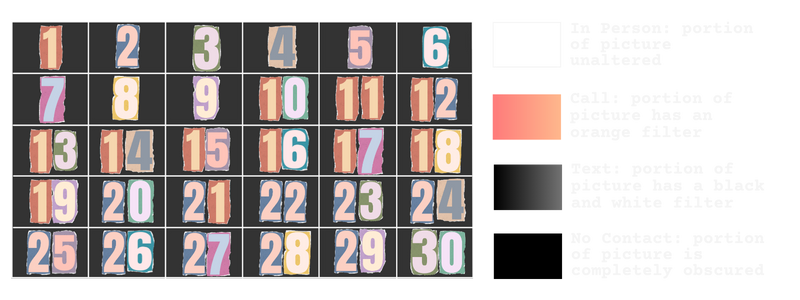

Motivated by Data Feminism “What Gets Counted Counts”, I wanted to collect data about myself that is not currently being tracked so that I can utilize it to better drive my behavior. This inspired me to analyze the days and methods in which I communicated with my mom, and by extension, my dad and brother, for 3 months from December 2023 to February 2024. This data was obtained through my phone carrier log history, text thread history, photo album, and Google Calendar. The latter two sources were utilized to determine if I spent time in person with my family at home or elsewhere. The former two were used to determine communication via the phone – most of which involved the other two family members through the family group text chat or being put on speaker.
Communication each month is summarized by a modified picture of my family. The layout resembles a calendar, with the picture divided into 30 boxes, each corresponding to a day of the month. To account for December’s additional day, data from the 31st was excluded, as it did not differ from the previous 15 days. For January, the 31st was added as the first box of February, allowing these two months to be fully represented in the visualization.
For this project, I determined a hierarchy of contact types, ranking them from highest to lowest as follows: 1) in-person, 2) phone call, 3) text message, and 4) no contact. Each box in the image is altered as indicated in the legend below based on the highest-ranked communication method for that day, although multiple methods could have occurred.
